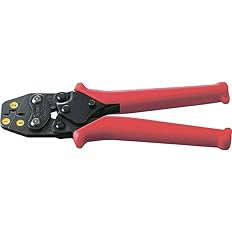
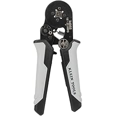

【現場で使ってる】電気工事士おすすめ圧着工具6選
電気工事の現場で実際に使っている圧着工具を紹介します。
裸圧着端子、絶縁被覆付圧着端子、CE端子、フェルール、LANかしめなど、
端子や用途によって使う工具はかなり変わります。
自分も最初は圧着工具は1本で何とかなるかなと思っていましたが、 実際は役割が全部違うので、用途に合った物を使い分けた方が確実で仕上がりも安定します。
この記事では、実際に現場で使っている圧着工具をベースに、 どの作業にどの工具が向いているか分かりやすくまとめています。
※電気工事士が実際に現場で使っている圧着工具を、用途別にまとめています。
迷ったらここから選べばOK
圧着工具は「よく売れている物」を選ぶより、自分がよく使う端子に合う物を選ぶ方が失敗しにくいです。
自分の現場感でざっくり分けると、まずはこの選び方でOKです。
圧着工具は1本で全部やるより、用途ごとに分けた方が仕上がりも安定しやすく、現場でもかなり安心です。
圧着工具は1本で全部やるより、用途ごとに分けた方が確実です
裸圧着端子、絶縁被覆付圧着端子、CE端子、フェルール、LANかしめは、全部役割が違います。
無理に1本で何でもやろうとするより、用途に合った物を使った方が仕上がりも確実で、作業もしやすいです。
今回紹介している1〜6は全部役割が違っていて、現場ではどれも必要になります。
どれも使いやすくて壊れにくいので、用途ごとにそろえておくとかなり助かります。
自分の作業内容に近いものがあれば、参考にしてみてください。
まず1本だけ選ぶなら『AK2MA』が見やすいです
圧着工具は本来、用途ごとに分けるのが基本です。
ただ、最初に1本だけ選ぶなら、自分はAK2MAがかなり見やすいと思います。
裸圧着端子で出番が多く、小型で握りやすいので、まず最初の1本としてかなり使いやすいです。
丸端子・Y端子・棒端子などをよく使う人なら、ここから見れば外しにくいです。
圧着工具は用途で使い分けるとかなりやりやすいです
圧着工具は見た目が似ていても、実際に使う端子が違うと全然役割が違います。
裸圧着端子を打つ工具と、絶縁被覆付端子を打つ工具では、使い方も仕上がりも変わります。
CE端子はCE端子向けの工具が一番使いやすいですし、フェルールはフェルール専用の形状の方が仕上がりがきれいです。
LANもかしめたあとにチェッカーで確認するところまでセットで考えた方が安心です。
自分は用途ごとに分けて使っていますが、その方が失敗もしにくく、現場での安心感もかなり違います。
圧着は適当にやると怖いところなので、用途に合った物を使うのが大事です。
『ロブテックス ミニ圧着工具 AK2MA』

小型で握りやすく、裸圧着端子で一番使いやすいモデル
この工具の特にいいところ
小型で握りやすく、かなり使いやすいです。
丸端子、Y端子、棒端子などの裸圧着端子で基本的によく使っています。
裸圧着端子用でまず1本使いやすい物を選ぶなら、このAK2MAがかなり使いやすいです👇
これは自分が裸圧着端子でかなりよく使っている圧着工具です。
小型で握りやすく、現場でも取り回しが良いので出番が多いです。
基本的には丸端子、Y端子、棒端子などの裸圧着端子で使っています。
小さいのにしっかり使いやすく、持っていて使う場面がかなり多いです。
裸端子用で何を使うか迷った時は、まずこれを持っておけばかなりやりやすいと思います。
自分の中ではかなり安心して使える1本です。
良かったところ
- 小型で握りやすい
- 裸圧着端子でかなり使いやすい
- 丸端子、Y端子、棒端子で出番が多い
- 取り回しが良く使いやすい
裸圧着端子用で使いやすい工具を探しているなら、このモデルを選んでおくとかなり安心です👇
▶ 『AK2MA』をAmazonで見てみる 裸圧着端子用で一番使いやすい『マーベル 圧着工具 MH-14』

14sqまで対応できる、たまに太物を打つ人向け
この工具の特にいいところ
AK2MAより大きく、1.25sq・2sq・5.5sq・8sq・14sqまで圧着できます。
14sqをたまに打つ人にはかなり使いやすいです。
たまに14sqまで打つことがあるなら、このMH-14を持っておくとかなり助かります👇
これは裸圧着端子用の中でも、少し太いサイズまで対応したい時に使いやすい工具です。
AK2MAより大きめですが、その分対応できる範囲が広いです。
1.25sq、2sq、5.5sq、8sq、14sqまで圧着できるので、 14sqをあまり打たないけど、たまに出るという人にはかなりちょうどいいと思います。
自分の中では、普段使いの小型工具とは別に、少し太い物まで見たい時に使うイメージです。
対応範囲を広げたい人にはかなり向いています。
こんな人におすすめ
- 14sqをたまに打つ人
- 対応範囲が広い物を持っておきたい人
- 裸圧着端子用をサイズ別で使い分けたい人
- 少し太い物まで対応したい人
たまに太めの裸端子も打つなら、このモデルを選んでおくとかなり使いやすいです👇
▶ 『MH-14』をAmazonで見てみる 14sqをたまに打つならこれ『ロブテックス 絶縁被覆付圧着端子用 AK112MA』

絶縁被覆付圧着端子で意外と出番が多いモデル
この工具の特にいいところ
直線スリーブや差込形ピン端子など、絶縁被覆付圧着端子用でかなり使いやすいです。
意外と出番があるので、持っておくと助かります。
絶縁被覆付圧着端子を使うなら、このAK112MAがかなり使いやすいです👇
これは絶縁被覆付圧着端子用として使っている工具です。
直線スリーブや差込形ピン端子などで使うことがあり、意外と出番があります。
裸端子用とは役割が違うので、こういう物は専用工具を使った方が安心です。
合っている工具を使った方が仕上がりも安定して、余計な失敗もしにくいです。
現場では毎日ではなくても、持っておくと助かる場面がちゃんとある工具だと思います。
絶縁被覆付圧着端子を触る人にはかなり向いています。
こんな人におすすめ
- 絶縁被覆付圧着端子を使う人
- 直線スリーブや差込形ピン端子を触る人
- 用途ごとにきちんと工具を分けたい人
- 意外な出番に備えておきたい人
絶縁被覆付圧着端子を使うなら、このモデルを選んでおくとかなり安心です👇
▶ 『AK112MA』をAmazonで見てみる 絶縁被覆付圧着端子ならこれ『ロブテックス 絶縁被覆付閉端接続子用 AK25MA』

CE端子を打つなら一番使いやすいモデル
この工具の特にいいところ
CE端子を圧着するなら、このAK25MAが一番使いやすいです。
CE1・CE2・CE5でだいたい事足ります。
CE端子を圧着するなら、このAK25MAを持っておくのがかなり安心です👇
これはCE端子用として使っている工具で、自分の中では一番使いやすいと感じています。
CE端子を打つなら、かなり素直にこれをおすすめしやすいです。
CE1・CE2・CE5でだいたい事足りるので、現場で必要になるところはかなりカバーしやすいです。
CE端子はこれ用の工具を使った方がやっぱり安心感があります。
CE端子を使う場面があるなら、持っておく価値はかなり高いと思います。
自分の中では、CE用としてかなり信頼している1本です。
良かったところ
- CE端子で一番使いやすい
- CE1・CE2・CE5で事足りる
- CE端子作業でかなり安心して使える
- 専用工具として持つ価値が高い
CE端子を圧着するなら、このモデルを選んでおくとかなりやりやすいです👇
▶ 『AK25MA』をAmazonで見てみる CE端子を打つならこれ『Klein Tools 34055 フェルール圧着工具』

フェルール圧着でかなり使いやすい4面タイプ
この工具の特にいいところ
4面に引っ掛かりができる形で圧着できるので、とても使いやすいです。
フェルール用としてかなり安心して使えます。
フェルールをきれいに圧着したいなら、この34055がかなり使いやすいです👇
これはフェルール用として使っている工具です。
4面に引っ掛かりができる形で圧着できるので、かなり使いやすいと感じています。
フェルールは専用工具を使った方が仕上がりが安定しやすく、見た目もきれいにしやすいです。
こういう部分はやっぱり専用工具の良さが出ます。
調節可能なラチェット付きなのも使いやすく、フェルール作業をする人にはかなり向いています。
自分の中ではフェルール用としてかなり信頼している工具です。
こんな人におすすめ
- フェルールを使う人
- 4面でしっかり圧着したい人
- 仕上がりを安定させたい人
- フェルール用を専用で持ちたい人
フェルールを使うなら、このモデルを選んでおくとかなり使いやすいです👇
▶ 『Klein Tools 34055』をAmazonで見てみる フェルール用ならこれ『サンワダイレクト かしめ工具 500-LAN-TL1』

LANかしめはこれがあればかなりやりやすいモデル
この工具の特にいいところ
LANかしめはこれがあればかなりやりやすいです。
かしめたあとにチェッカーで確認するところまでセットで考えると安心です。
LANかしめをするなら、この500-LAN-TL1を持っておくとかなりやりやすいです👇
これはLANかしめ用として使っている工具です。
LANかしめはこれがあればいいと思えるくらい使いやすいです。
ただ、LANはかしめて終わりではなく、ちゃんとチェックするところまでやる方が安心です。
見た目で大丈夫そうでも、確認してみると配線ミスや断線があることがあります。
LANかしめで大事な流れ
- LANプラグをかしめる
- チェッカーで導通を確認する
- 結線順や断線がないかを見る
- 問題なければ使う
一緒に使いたいLANチェッカー2機種
LANチェッカーは、LANケーブルの導通・断線・結線ミスなどを確認する道具です。
LANテスターと呼ばれることもあります。
かしめた直後にチェックしておくと、現場でのトラブルを減らしやすいです。
安くシンプルに確認したい人向けと、しっかり見たい人向けで2つ載せています。

『サンワサプライ LANケーブルテスター LAN-TST7』
シンプルで安価なチェッカー。まず導通確認をしたい人に使いやすいモデルです。
このチェッカーの特にいいところ
スイッチを入れるとLEDが順番に光るので、正常か異常かを見やすいです。
シンプルで価格も手を出しやすいです。
親機と子機の同じ番号が順番に光っていけば、ストレートに結線されていると判断しやすいです。
逆に、点灯しない番号がある時や順番がズレる時は、断線や結線ミスの可能性があります。
見方のポイント
- 正常：親機と子機の同じ番号が順番に光る
- 異常：点灯しない番号がある
- 異常：番号の順番がズレる
- まず1台持つならかなり使いやすい

『HIOKI LANケーブルハイテスタ 3665』
自分が使っているチェッカー。LANかしめ後の確認をしっかりやりたい時に安心感があります。
このチェッカーの特にいいところ
LANかしめ後の確認用として安心して使いやすいです。
かしめ工具とセットで考えておくとかなり安心です。
自分はLANかしめをしたあと、この3665で確認しています。
見た目だけでは大丈夫そうでも、実際にチェックすると違うことがあるので、確認工程はかなり大事です。
こんな人に向いています
- LAN施工後の確認をしっかりやりたい人
- かしめ工具とチェッカーをセットで考えたい人
- 現場で安心感を重視したい人
- 普段からLAN端末処理をする人
LANチェッカーの役割や使い方をもっと詳しく見たい方は、下の記事でまとめています👇
LANは見た目だけでは判断しにくいので、かしめ工具とチェッカーはセットで考えておくとかなり安心です。
LAN施工をするなら、この組み合わせはかなり使いやすいと思います。
どれを選べばいい？
使う端子や作業内容に合わせて選ぶと、かなり使いやすくなります。
どれを買えばいいか迷っている人は、この表から選べばOKです👇
| 機種 | 向いている作業 | 特徴 |
|---|---|---|
| 『AK2MA』 | 丸端子・Y端子・棒端子などの裸圧着端子 | 小型で握りやすく、かなり使いやすい |
| 『MH-14』 | 1.25sq〜14sqまでの裸圧着端子 | たまに14sqまで打つ人向け |
| 『AK112MA』 | 直線スリーブ・差込形ピン端子など | 絶縁被覆付圧着端子用で意外と出番あり |
| 『AK25MA』 | CE1・CE2・CE5のCE端子 | CE端子ならこれがかなり使いやすい |
| 『Klein Tools 34055』 | フェルール圧着 | 4面で引っ掛かりができ使いやすい |
| 『500-LAN-TL1』 | LANかしめ | LANかしめ用としてかなり使いやすい |
比較してみて、自分の作業に合うものがあれば、そのモデルを選べばOKです。
圧着工具は全部役割が違うので、無理に1本で何でもやるより、用途ごとに分けた方が確実です。
最後にざっくり選ぶならこの6パターンです
- 裸圧着端子でまず1本 → AK2MA
- たまに14sqまで打つ → MH-14
- 絶縁被覆付圧着端子 → AK112MA
- CE端子 → AK25MA
- フェルール → Klein Tools 34055
- LANかしめ → 500-LAN-TL1
全部必要に見えても、実際は自分の作業で使う端子に合わせて選べばOKです。
まずは一番出番が多い用途からそろえると失敗しにくいです。
圧着工具は用途に合った物を使うとかなり安心です
裸圧着端子、絶縁被覆付端子、CE端子、フェルール、LANかしめは、それぞれ役割が違います。
用途に合った工具を使うだけで、仕上がりも安定しやすく、現場での安心感もかなり変わります。
圧着は適当にやるより、役割ごとに工具を分けておいた方が確実にやりやすいです。
自分の作業内容に合う物をそろえておくと、現場でかなり助かります。
合わせて見ておくと作業がつながりやすい工具
圧着作業は、被覆を剥く → 圧着する → 仕上げる、という流れになることが多いです。
一緒に見ておくと工具選びがかなり分かりやすくなります。
次に合わせて見たい工具


※当サイトはAmazonアソシエイト・プログラムに参加しており、適格販売により収入を得ています。